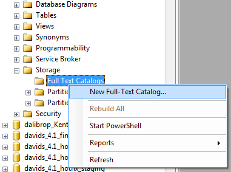
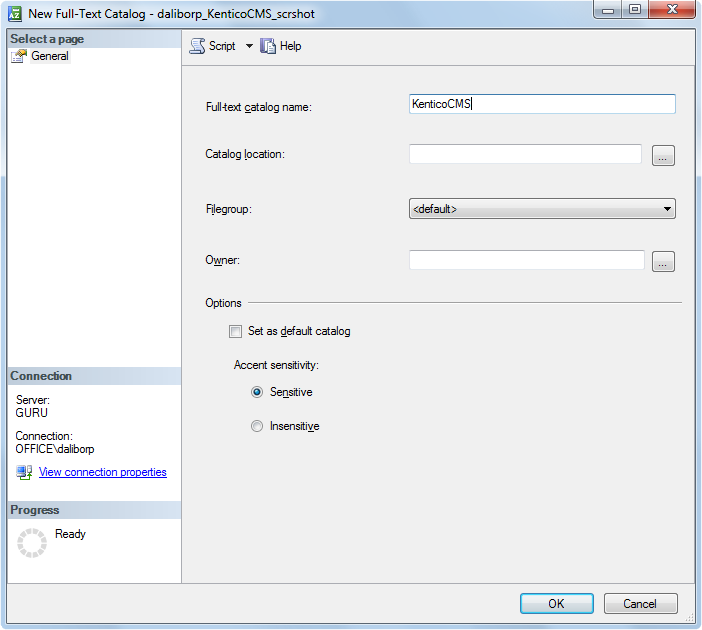
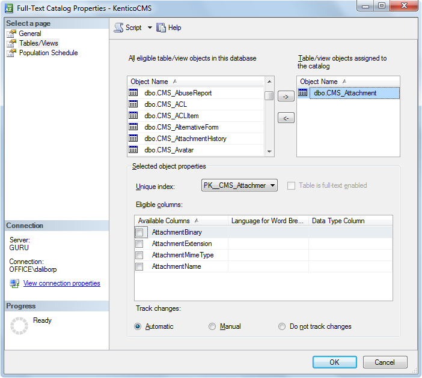

Configuring SQL search for attachment files
You can use the SQL search to find results in the content of page attachment files uploaded into the database.
Important: To search common file types (TXT, CSV, HTML/XML, PDF , MS Office open xml formats), use the attachment search feature of smart search page indexes . Only use the SQL search if you need to search file formats that are not supported, such as the legacy MS Office formats: DOC, XLS, PPT
The SQL attachment search uses the standard Microsoft SQL Server full-text search engine. The search is available for all supported versions of SQL Server.
Prerequisites:
Full-text search support must be installed on your SQL Server. The full-text search is available for all editions of Microsoft SQL Server, including the Express Edition with Advanced Services.
Your Kentico website must be configured for storing files in the database (Settings -> System -> Files -> Store files in database).
Use one of the following guides to configure your Kentico database for SQL search of attachment files:
Supported file types
The standard full-text search engine delivered with Microsoft SQL Server can search the following file types:
TXT
HTML
DOC
XLS
PPT
If you want to search other types of text files, you need to install appropriate IFilter libraries. You can download or purchase IFilter libraries from third-party vendors.
Manually configuring full-text search on MSSQL Server
Use the following steps to configure your Kentico database for full-text search in file attachments:
Start Microsoft SQL Server Management Studio.
If you cannot use SQL Server Management Studio on your database server, you can configure the full-text search through a script instead.
Locate your Kentico database.
Unfold the Storage sub-folder, right-click Full Text Catalogs and click New Full-Text Catalog.

Type a Full-text catalog name and click OK.

Right-click the new full-text catalog and choose Properties.
In the Full-Text Catalog Properties dialog, click the Tables/Views tab.
Assign the CMS_Attachment table to the catalog.
Check the box next to the AttachmentBinary column
Set the Language for Word Breaker to English or another value
Set the Data Type Column to AttachmentExtension

Click OK.
You can now combine the SQL attachment search with smart search results or enable attachments for the SQL search.
Enabling full-text search on MSSQL Server - Script
If you cannot use SQL Server Management Studio to configure the full-text search, run the following script against your Kentico database:
-- Allows IFilter library loadingexec sp_fulltext_service 'verify_signature', 0exec sp_fulltext_service 'load_os_resources', 1-- Creates the Full Text Catalog exec sp_fulltext_catalog 'KenticoCMSCatalog','create'-- Adds the CMS_Attachment table to the catalogexec sp_fulltext_table 'CMS_Attachment','create','KenticoCMSCatalog','PK_CMS_Attachment'-- Sets the data column of the CMS_Attachment table in the catalogexec sp_fulltext_column 'CMS_Attachment','AttachmentBinary','add',NULL,'AttachmentExtension'-- Populates the catalogexec sp_fulltext_table 'CMS_Attachment','start_full'You can now combine the SQL attachment search with smart search results or enable attachments for the SQL search.
Combining the SQL attachment search with the Smart search
Once you have the SQL server set up, you can configure your smart search result web parts to run SQL searches through the content of page attachments.
Enable SQL attachment searching through the properties of the Smart search dialog with results or Smart search results web part:
|
Property name |
Description |
|
Enable SQL attachment search |
If checked, the web part runs an SQL attachment search for every search request and combines the results with the results provided by the assigned indexes. |
|
WHERE condition |
WHERE condition used to limit the scope of the attachment search for the web part. You can use the condition to:
|
|
ORDER BY expression |
ORDER BY expression that determines the order of pages retrieved by the attachment search in the results. |
When users perform a search and the system finds a match in the attachment of a page, the given page is added to the search results. The attachment results are always interlaced with the other results provided by the specified smart search indexes. This behavior is by design and cannot be modified.
The attachment search is performed by the SQL server, so it is not affected by the settings and restrictions of the used search indexes. To limit the attachment search scope, enter an appropriate value into the WHERE condition property of the used web part. For example, if you have a search results web part using a page index that is limited to the /News/% section of your website, you need to add the following WHERE condition to ensure that the attachment search is also restricted to these pages: NodeAliasPath LIKE '/News/%'
The search only returns pages if they are directly connected to the matching attachment through one of the following methods:
Attachment files added to pages through fields with the Data type set to File or Attachments in the page type definition.
Attachments uploaded in the Pages application on the Properties -> Attachments tab of pages
Enabling attachment search for the SQL search
Perform the following steps if you wish to search attachments using the SQL search:
Open the Page types application.
Edit the Root page type.
Select the Queries tab.
Edit the searchattachments query and uncomment the following part of the code:
SELECTView_CMS_Tree_Joined.*, View_CMS_Tree_Joined.NodeNameASSearchResultNameFROMCMS_AttachmentINNERJOINView_CMS_Tree_JoinedONView_CMS_Tree_Joined.DocumentID = CMS_Attachment.AttachmentDocumentIDWHERE(##WHERE##)AND(([AttachmentName]LikeN'%'+ @Expression + N'%')OR([AttachmentTitle]LikeN'%'+ @Expression + N'%')OR([AttachmentDescription]LikeN'%'+ @Expression + N'%'))OR(FREETEXT(AttachmentBinary, @expression))ORDERBY##ORDERBY##
The SQL search automatically includes the results from the attachment search.